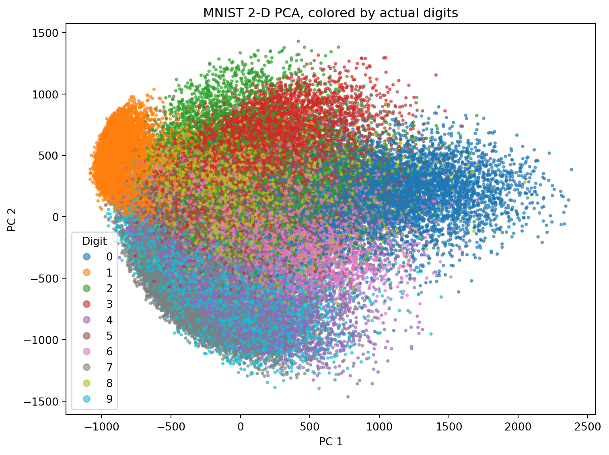
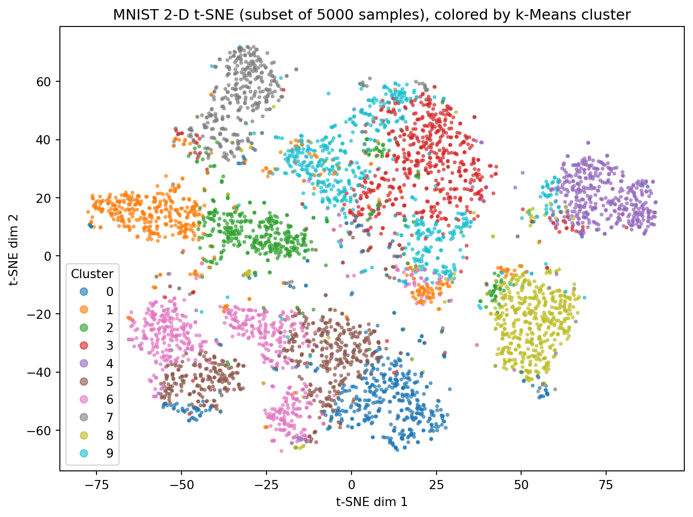
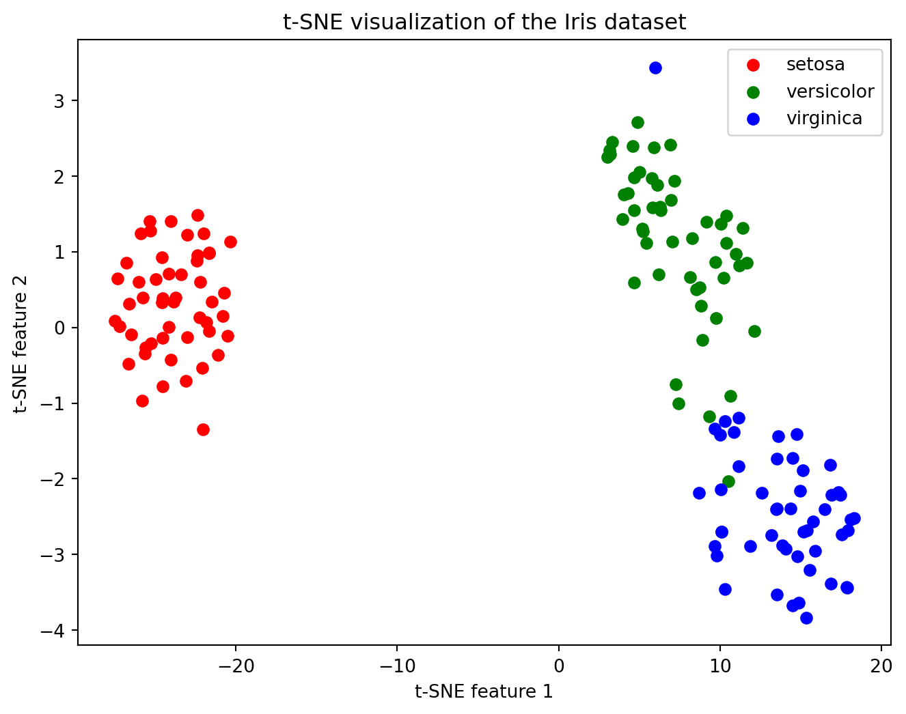

In very high-dimensional spaces, almost all the “volume” of a dataset lives near its corners, and pairwise Euclidean distances between points tend to concentrate around a single value.
Think of each cell as a point in a space where each gene’s activity is its own “axis.” When you have only a few genes (low dimensions), you can tell cells apart by how far apart they sit in that space. But as you add more genes, almost every cell ends up about the same distance from every other cell—so you lose any useful sense of “close” or “far.”
Why k-Means fails:
k-Means tries to draw boundaries around groups by asking “Which centroid (group center) is each cell closest to?” In very high–gene spaces, every cell is nearly the same distance from all centroids. Small moves of the centroids don’t change which cells get assigned to them, so k-Means can’t find real groupings.
Why t-SNE helps:
t-SNE ignores the idea of absolute distance and instead asks, “Which cells are each cell’s few nearest neighbors?” It builds a map that keeps those local neighborhoods intact. In the final 2D picture, cells that were neighbors in the huge gene space stay neighbors on the screen, while cells that weren’t neighbors get pushed apart. This way, you still see meaningful clusters (e.g., cell types) even when dealing with hundreds or thousands of genes.
t-SNE (pronounced “tee-snee”) is a tool that helps us look at complex data by making it easier to see patterns.
High-dimensional beads (hard to see groups):
[🔴] [🔵] [🟢] [🟡] [🔴] [🟢] [🔵] [🟡] [🔴] [🟢] [🔵] [🟡]
Each bead has many features (color, size, shape, etc.)
|
vt-SNE makes a simple 2D map:
[🔴] [🔴] [🔴] | | [🔵] [🔵] [🔵]
[🟢] [🟢] [🟢]
[🟡] [🟡] [🟡]
Now, similar beads are grouped together.
In summary:
t-SNE is like a magic tool that turns complicated data into a simple picture, so we can easily see groups and patterns—even if we do not understand the math behind it!


In very high-dimensional spaces, almost all the “volume” of a dataset lives near its corners, and pairwise Euclidean distances between points tend to concentrate around a single value. As dimension \(n\) grows, the volume of an inscribed ball in the hypercube \([-1,1]^n\) shrinks toward zero, and the ratio
\[ \frac{\max d - \min d}{\min d} \]
for distances \(d\) between random points rapidly approaches zero. Intuitively, “nearest” and “farthest” neighbors become indistinguishable, so any method that relies on global distances (like k-Means) loses its ability to meaningfully separate points into clusters.
k-Means clustering exemplifies this breakdown: it repeatedly assigns each point to its nearest centroid based on squared-distance comparisons. When all inter-point distances look almost the same, tiny shifts in centroid positions barely affect those assignments, leading to noisy labels and flat optimization landscapes with no clear gradients. In practice, k-Means can “get stuck” or fail to discover any meaningful grouping once dimensions rise into the dozens or hundreds.
t-SNE sidesteps these problems by focusing only on local similarities rather than global distances. It first converts pairwise distances in the high-dimensional space into a distribution of affinities \(p_{ij}\) using Gaussian kernels centered on each point. Then it searches for a low-dimensional embedding whose Student-t affinity distribution \(q_{ij}\) best matches \(p_{ij}\). By emphasizing the preservation of each point’s nearest neighbors and using a heavy-tailed low-dimensional kernel to push dissimilar points apart, t-SNE highlights local clusters even when global geometry has become uninformative—making it a far more effective visualization and exploratory tool in very high dimensions.
import matplotlib.pyplot as plt
from sklearn import datasets
from sklearn.manifold import TSNE
# Load the Iris dataset
iris = datasets.load_iris()
X = iris.data # The features (measurements)
y = iris.target # The species labels (0, 1, 2)
# Run t-SNE to reduce the data to 2 dimensions
tsne = TSNE(n_components=2, random_state=0, perplexity=30)
X_2d = tsne.fit_transform(X)
# Plot the results, one species at a time
plt.figure(figsize=(8, 6))
# Setosa (label 0)
plt.scatter(X_2d[y == 0, 0], X_2d[y == 0, 1], color='red', label='setosa')
# Versicolor (label 1)
plt.scatter(X_2d[y == 1, 0], X_2d[y == 1, 1], color='green', label='versicolor')
# Virginica (label 2)
plt.scatter(X_2d[y == 2, 0], X_2d[y == 2, 1], color='blue', label='virginica')
plt.xlabel("t-SNE feature 1")
plt.ylabel("t-SNE feature 2")
plt.title("t-SNE visualization of the Iris dataset")
plt.legend()
plt.show()
Stochasticity: play around with the random_state parameter. Does your tSNE plot look different to the person you are seated next to?
Play around with the perplexity parameter (pair up with someone)
Which value of perplexity should you use?
Let us read the paper How to use t-SNE effectively (Wattenberg, Viégas, and Johnson 2017).
Distances are not preserved
Normal does not always look normal
Load the US Arrests data in Python and perform tSNE on this (pair up with a person)
How would you evaluate this?
Vary the perplexity parameter
Some code to help you get started is here:
import pandas as pd
import matplotlib.pyplot as plt
from sklearn.manifold import TSNE
# Load the US Arrests data
url = "https://raw.githubusercontent.com/cambiotraining/ml-unsupervised/main/course_files/data/USArrests.csv"
df = pd.read_csv(url, index_col=0)
# Prepare the data for t-SNE
X = df.values # Convert to numpy array
# Fill in your code here ..........[1] How to Use t-SNE Effectively